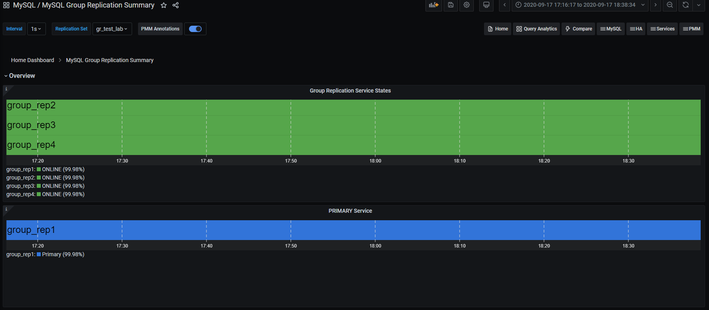
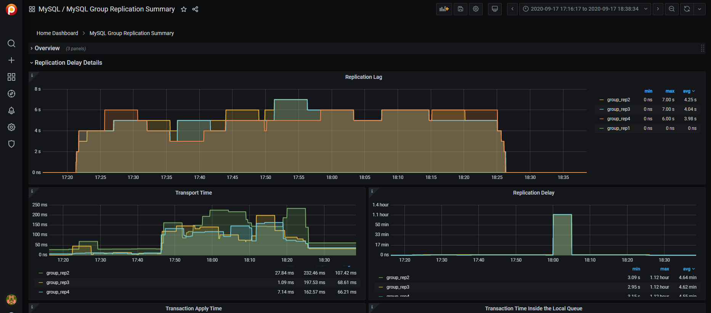
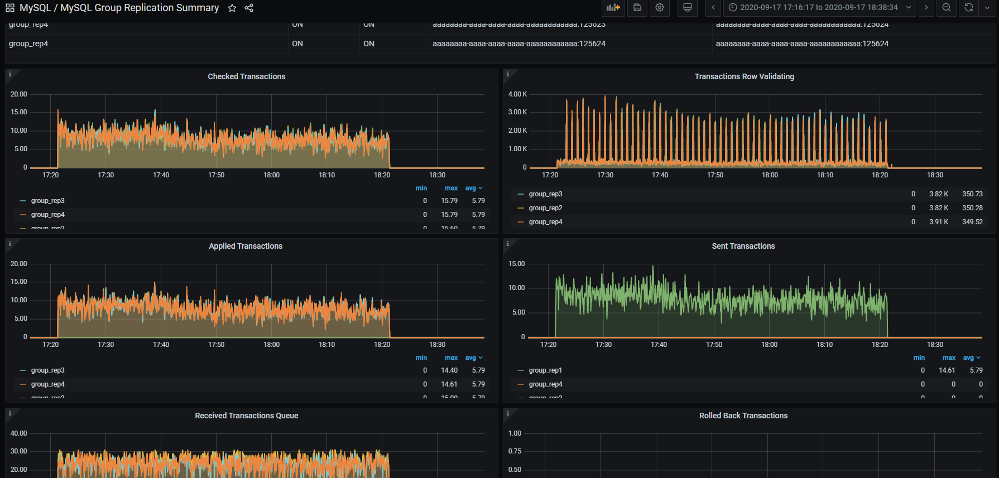
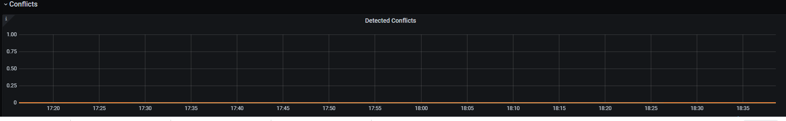

Deploying high availability solution with Group Replication¶
This document provides step-by-step instructions on how to deploy high availability solution with Group Replication.
Preconditions¶
We will use the following elements:
-
1 Virtual IP for ProxySQL failover - 192.168.4.194
-
2 ProxySQL nodes
- Proxy1 192.168.4.191
- Proxy2 192.168.4.192
-
4 MySQL nodes in Single Primary mode
- Gr1 192.168.4.81 - Initial Primary
- Gr2 192.168.4.82 - Replica / failover
- Gr3 192.168.4.83 - Replica / failover
- Gr4 192.168.4.84 - Replica / Backup
-
All of the following ports must be open if a firewall is in place or any other restriction like AppArmor or SELinux.
-
ProxySQL:
- 6033
- 6032
- 3306
-
MySQL - Group Replication:
- 3306
- 33060
- 33061
-
Nodes configuration¶
Preparation¶
-
Install Percona Server-based variant of Percona Distribution for MySQL on each MySQL node (Gr1-Gr4).
-
Make sure that all the nodes use the same time-zone and time
$ date Tue Aug 18 08:22:12 EDT 2020 -
Also check that
ntpdservice is present and enabled -
Make sure that each node resolves the other nodes by name
for i in 1 2 3 4 ; do ping -c 1 gr$i > /dev/null;echo $?; doneIf nodes aren’t able to resolve, add the entries in the
/etc/hostsfile. -
After instances are up and running, check Percona Server for MySQL version on each node:
mysql>\s -------------- /opt/mysql_templates/PS-8P/bin/mysql Ver 8.2.0-1 for Linux on x86_64 (Percona Server (GPL), Release 11, Revision 159f0eb)
Step 1 Create an administration user¶
-
Create a user for administration. We will use the user
dbain our setup:CREATE user dba@localhost identified by 'dbapw'; CREATE user dba@'192.168.%' identified by 'dbapw'; GRANT ALL on *.* to dba@localhost with grant option; GRANT ALL on *.* to dba@'192.168.%' with grant option;Log out from the client as the root user and log in as the
dbauser. -
Make sure to have a good and unique SERVER_ID value:
mysql> show global variables like 'server_id'; +---------------+-------+ | Variable_name | Value | +---------------+-------+ | server_id | 1 | +---------------+-------+ 1 row in set (0.01 sec)The
server_idvalue must be unique on each node
Step 2. Add Group Replication settings¶
-
Stop all the nodes
$ service mysql stop -
In the
my.cnfconfiguration file, add the following:##################### #Replication + binlog settings ##################### auto-increment-increment =1 auto-increment-offset =1 log-bin =<path_to_logs>/binlog log-bin-index =binlog.index binlog-checksum =NONE binlog-format =ROW binlog-row-image =FULL log-slave-updates =1 binlog-transaction-dependency-tracking =WRITESET_SESSION enforce-gtid-consistency =TRUE gtid-mode =ON master-info-file =master.info master-info-repository =TABLE relay_log_info_repository =TABLE relay-log =<path_to_logs>/relay sync-binlog =1 ### SLAVE SECTION skip-slave-start slave-parallel-type = LOGICAL_CLOCK slave-parallel-workers = 4 slave-preserve-commit-order = 1 ###################################### #Group Replication ###################################### plugin_load_add ='group_replication.so' plugin-load-add ='mysql_clone.so' group_replication_group_name ="aaaaaaaa-aaaa-aaaa-aaaa-aaaaaaaaaaaa" #<-- Not good. Use something that will help you to identify the GR transactions and from where they come from IE "dc1euz1-aaaa-aaaa-aaaa-aaaaaaaaaaaa" group_replication_start_on_boot =off group_replication_local_address = "192.168.4.81/2/3/4:33061" <---- CHANGE THIS TO MATCH EACH NODE LOCAL IP group_replication_group_seeds = "192.168.4.81:33061,192.168.4.82:33061,192.168.4.83:33061,192.168.4.84:33061" group_replication_bootstrap_group = off transaction-write-set-extraction = XXHASH64 -
Restart all nodes:
$ service mysql start -
Connect to the nodes
Step 3. Create a replication user¶
-
On every node, create a user for replication
SET SQL_LOG_BIN=0; CREATE USER replica@'192.168.4.%' IDENTIFIED BY 'replicapw'; #<--- Please note the filter by IP is more restrictive GRANT REPLICATION SLAVE ON *.* TO replica@'192.168.4.%'; FLUSH PRIVILEGES; SET SQL_LOG_BIN=1; -
Link the nodes with the replication channel.
CHANGE MASTER TO MASTER_USER='replica', MASTER_PASSWORD='replicapw' FOR CHANNEL 'group_replication_recovery';Run this command on all nodes.
-
Check the current status:
(dba@node1) [(none)]>\u performance_schema (dba@node1) [performance_schema]>show tables like '%repl%'; +-------------------------------------------+ | Tables_in_performance_schema (%repl%) | +-------------------------------------------+ | replication_applier_configuration | | replication_applier_filters | | replication_applier_global_filters | | replication_applier_status | | replication_applier_status_by_coordinator | | replication_applier_status_by_worker | | replication_connection_configuration | | replication_connection_status | | replication_group_member_stats | | replication_group_members | <------------------------ +-------------------------------------------+ (dba@node1) [performance_schema]>select * from replication_group_members\G CHANNEL_NAME: group_replication_applier MEMBER_ID: MEMBER_HOST: MEMBER_PORT: MEMBER_STATE: MEMBER_ROLE: OFFLINE MEMBER_VERSION: 1 row in set (0.00 sec)At this stage, you should be able to start the first (Primary) cluster node.
-
Start the Primary node (Gr1) and enable Group Replication:
(dba@node1)[none]> SET GLOBAL group_replication_bootstrap_group=ON; (dba@node1)[none]> START GROUP_REPLICATION; (dba@node1)[none]> SET GLOBAL group_replication_bootstrap_group=OFF; -
Check if the node registered correctly:
(dba@node1) [none]>select * from performance_schema.replication_group_members\G CHANNEL_NAME: group_replication_applier MEMBER_ID: 90a353b8-e6dc-11ea-98fa-08002734ed50 MEMBER_HOST: gr1 MEMBER_PORT: 3306 MEMBER_STATE: ONLINE MEMBER_ROLE: PRIMARY MEMBER_VERSION: 8.2.0 -
Once the Primary node is running, connect to the secondary node (Gr2 node) and enable Group Replication:
(dba@node2) [none]>START GROUP_REPLICATION; Query OK, 0 rows affected (4.60 sec) -
Check if the secondary node registered correctly:
(dba@node2) [performance_schema]>select * from replication_group_members\G *************************** 1. row *************************** CHANNEL_NAME: group_replication_applier MEMBER_ID: 58ffd118-e6dc-11ea-8af8-08002734ed50 MEMBER_HOST: gr2 MEMBER_PORT: 3306 MEMBER_STATE: ONLINE MEMBER_ROLE: SECONDARY MEMBER_VERSION: 8.2.0 *************************** 2. row *************************** CHANNEL_NAME: group_replication_applier MEMBER_ID: 90a353b8-e6dc-11ea-98fa-08002734ed50 MEMBER_HOST: gr1 MEMBER_PORT: 3306 MEMBER_STATE: ONLINE MEMBER_ROLE: PRIMARY MEMBER_VERSION: 8.2.0 -
Test the replication:
- On the Primary node, run the following command:
(dba@node1) [performance_schema]>create schema test; Query OK, 1 row affected (0.76 sec) (dba@node1) [performance_schema]>\u test Database changed (dba@node1) [test]>create table test1 (`id` int auto_increment primary key); Query OK, 0 rows affected (0.32 sec) (dba@node1) [test]>insert into test1 values(null); Query OK, 1 row affected (0.34 sec)- On the secondary node:
(dba@node2) [performance_schema]>use \test Database changed (dba@node2) [test]>select * from test1; +----+ | id | +----+ | 1 | +----+ 1 row in set (0.00 sec) -
Start Group Replication on the remaining nodes
(dba@node3) [performance_schema]>START GROUP_REPLICATION; (dba@node4) [performance_schema]>START GROUP_REPLICATION;
Proxy setup¶
Step 1. Installation¶
-
Install ProxySQL. In our example, we install ProxySQL on Proxy1 192.168.4.191 and Proxy2 192.168.4.192 nodes.
-
Create the monitoring user on MySQL Group Replication nodes:
create user monitor@'192.168.4.%' identified by 'monitor'; grant usage on *.* to 'monitor'@'192.168.4.%'; grant select on sys.* to 'monitor'@'192.168.4.%'; -
Define basic variables:
update global_variables set Variable_Value='admin:admin;cluster1:clusterpass' where Variable_name='admin-admin_credentials'; update global_variables set variable_value='cluster1' where variable_name='admin-cluster_username'; update global_variables set variable_value='clusterpass' where variable_name='admin-cluster_password'; update global_variables set Variable_Value=0 where Variable_name='mysql-hostgroup_manager_verbose'; update global_variables set Variable_Value='true' where Variable_name='mysql-query_digests_normalize_digest_text'; update global_variables set Variable_Value='8.2.0' where Variable_name='mysql-server_version'; update global_variables set Variable_Value='utf8' where Variable_name='mysql-default_charset'; update global_variables set Variable_Value=300 where Variable_name='mysql-tcp_keepalive_time'; update global_variables set Variable_Value='true' where Variable_name='mysql-use_tcp_keepalive'; update global_variables set Variable_Value='true' where Variable_name='mysql-verbose_query_error'; update global_variables set Variable_Value='true' where Variable_name='mysql-show_processlist_extended'; update global_variables set Variable_Value=50000 where Variable_name='mysql-max_stmts_cache'; update global_variables set Variable_Value='false' where Variable_name='admin-web_enabled'; update global_variables set Variable_Value='0' where Variable_name='mysql-set_query_lock_on_hostgroup'; load admin variables to run;save admin variables to disk; load mysql variables to run;save mysql variables to disk;Note
The user name and password need to reflect your standards. The ones used above are just an example.
-
Set up the nodes as a cluster:
INSERT INTO proxysql_servers (hostname,port,weight,comment) VALUES('192.168.4.191',6032,100,'PRIMARY'); INSERT INTO proxysql_servers (hostname,port,weight,comment) VALUES('192.168.4.192',6032,100,'SECONDARY'); load proxysql servers to run;save proxysql servers to disk;
Step 2. Define users, servers and query rules for read / write split¶
-
Create one or more valid users. Define these user(s). For example, if you have a user named
app_grwith the passwordtest, and that has access to your Group Replication cluster, the command to define the user is the following:insert into mysql_users (username,password,active,default_hostgroup,default_schema,transaction_persistent,comment) values ('app_gr','test',1,400,'mysql',1,'application test user GR'); LOAD MYSQL USERS TO RUNTIME;SAVE MYSQL USERS TO DISK; -
Define servers:
INSERT INTO mysql_servers (hostname,hostgroup_id,port,weight,max_connections,comment) VALUES ('192.168.4.81',400,3306,10000,2000,'GR1'); INSERT INTO mysql_servers (hostname,hostgroup_id,port,weight,max_connections,comment) VALUES ('192.168.4.81',401,3306,100,2000,'GR1'); INSERT INTO mysql_servers (hostname,hostgroup_id,port,weight,max_connections,comment) VALUES ('192.168.4.82',401,3306,10000,2000,'GR2'); INSERT INTO mysql_servers (hostname,hostgroup_id,port,weight,max_connections,comment) VALUES ('192.168.4.83',401,3306,10000,2000,'GR2'); INSERT INTO mysql_servers (hostname,hostgroup_id,port,weight,max_connections,comment) VALUES ('192.168.4.84',401,3306,1,2000,'GR2'); LOAD MYSQL SERVERS TO RUNTIME; SAVE MYSQL SERVERS TO DISK; -
Define query rules to get read / write split:
INSERT INTO mysql_query_rules (rule_id,proxy_port,username,destination_hostgroup,active,retries,match_digest,apply) values(4040,6033,'app_gr',400,1,3,'^SELECT.*FOR UPDATE',1); INSERT INTO mysql_query_rules (rule_id,proxy_port,username,destination_hostgroup,active,retries,match_digest,multiplex,apply) values(4042,6033,'app_gr',401,1,3,'^SELECT.*$',1,1); LOAD MYSQL QUERY RULES TO RUN;SAVE MYSQL QUERY RULES TO DISK;
Step 3. Create a view in SYS schema¶
Once all the configuration is ready, we need to have a special view in the SYS schema in Percona server nodes. Find the view working for the server version 8 and above here.
Run that sql on the Primary node of the Group Replication cluster.
Step 4. Activate support for Group Replication in ProxySQL¶
To activate the native support for Group Replication in ProxySQL, we will use the following group definition:
Writer HG-> 400
Reader HG-> 401
BackupW HG-> 402
Offline HG-> 9401
INSERT INTO mysql_group_replication_hostgroups (writer_hostgroup,backup_writer_hostgroup,reader_hostgroup, offline_hostgroup,active,max_writers,writer_is_also_reader,max_transactions_behind)
values (400,402,401,9401,1,1,1,100);
LOAD MYSQL SERVERS TO RUNTIME; SAVE MYSQL SERVERS TO DISK;
Comments about parameters¶
To obtain the most reliable results, we recommend setting the number of writers always to 1, and writer_is_also_reader to 1 as well.
max_writers: 1
writer_is_also_reader: 1
The max_transactions_behind is a subjective parameter that you should calculate on the basis of your needs. If, for instance, you cannot have a stale read, it will be safe to set this value to a low number (i.e. 50) and to set in all Group Replication nodes:
set global group_replication_consistency=AFTER;
If instead, you have no issue or strict requirements about some stale read, you can relax the parameter and ignore the group_replication_consistency setting. Our recommended setting is group_replication_consistency=AFTER and max_transactions_behind: 100.
See also
ProxySQL Documentation: mysql_group_replication_hostgroups
Step 5. Enable high availability for ProxySQL¶
keepalived will be used to enable High Availability for ProxySQL.
-
Install
keepalivedon each ProxySQL node using the package manager of your operating system:$ sudo apt install -y keepalived$ sudo yum install -y keepalived -
Modify the
/etc/keepalived/keepalived.conffile accordingly to your setup. In our case:-
Proxy1 192.168.4.0/24 dev enp0s9 proto kernel scope link src 192.168.4.191
-
Proxy2 192.168.4.0/24 dev enp0s9 proto kernel scope link src 192.168.4.192
-
VIP 192.168.4.194
Let’s say Proxy1 is the primary node while Proxy2 is the secondary node.
Given that, the config file looks as follows:
global_defs { # Keepalived process identifier router_id proxy_HA } # Script used to check if Proxy is running vrrp_script check_proxy { script "killall -0 proxysql" interval 2 weight 2 } # Virtual interface # The priority specifies the order in which the assigned interface to take over in a failover vrrp_instance VI_01 { state MASTER interface enp0s9 virtual_router_id 51 priority 100 <----- This needs to be different for each ProxySQL node, like 100/99 # The virtual ip address shared between the two load balancers virtual_ipaddress { 192.168.4.194 dev enp0s9 } track_script { check_proxy } } -
-
Start the
keepalivedservice. From now on, the VIP will be associated with the Proxy1 unless the service is down.
Disaster recovery implementation¶
The implementation of a DR (Disaster Recovery) site will follow the same direction provided for the main site. There are only some generic rules to follow:
-
A DR site should be located in a different geographic location than the main site (several hundred kilometers/miles away).
-
The connection link between the main site and the DR site can only be established using asynchronous replication (standard MySQL replication setup ).
Monitoring¶
Using Percona Management and Monitoring (PMM)¶
-
Use this quickstart to install Percona Monitoring and Management (PMM).
-
Specify the
replication_setflag when registering the Percona Server for MySQL node or the MySQL node in PMM:pmm-admin add mysql --username=pmm --password=pmm --query-source=perfschema --replication-set=gr_test_lab group_rep4 127.0.0.1:3306
Then you can use the Group Replication Dashboard and monitor your cluster with a lot of details.
The dashboard sections are the following:
-
Overview:

-
Replication delay details

-
Transactions

-
Conflicts

Using command line¶
From the command line, you need to manually query the tables in Performance schema:
+----------------------------------------------+
| replication_applier_configuration |
| replication_applier_filters |
| replication_applier_global_filters |
| replication_applier_status |
| replication_applier_status_by_coordinator |
| replication_applier_status_by_worker |
| replication_connection_configuration |
| replication_connection_status |
| replication_group_member_stats |
| replication_group_members |
+----------------------------------------------+
For example, use this command to get the lag in number of transactions on a node:
select @last_exec:=SUBSTRING_INDEX(SUBSTRING_INDEX( @@global.GTID_EXECUTED,':',-1),'-',-1) last_executed;select @last_rec:=SUBSTRING_INDEX(SUBSTRING_INDEX(Received_transaction_set,':',-1),'-',-1) last_received FROM performance_schema.replication_connection_status WHERE Channel_name = 'group_replication_applier'; select (@last_rec - @last_exec) as real_lag;
+---------------+
| last_executed |
+---------------+
| 125624 |
+---------------+
1 row in set, 1 warning (0.03 sec)
+---------------+
| last_received |
+---------------+
| 125624 |
+---------------+
1 row in set, 1 warning (0.00 sec)
+----------+
| real_lag |
+----------+
| 0 |
+----------+
1 row in set (0.00 sec)
You can use a more composite query to get information about each applier:
SELECT
conn_status.channel_name as channel_name,
conn_status.service_state as IO_thread,
applier_status.service_state as SQL_thread,
conn_status.LAST_QUEUED_TRANSACTION as last_queued_transaction,
applier_status.LAST_APPLIED_TRANSACTION as last_applied_transaction,
LAST_APPLIED_TRANSACTION_END_APPLY_TIMESTAMP -
LAST_APPLIED_TRANSACTION_ORIGINAL_COMMIT_TIMESTAMP 'rep delay (sec)',
LAST_QUEUED_TRANSACTION_START_QUEUE_TIMESTAMP -
LAST_QUEUED_TRANSACTION_ORIGINAL_COMMIT_TIMESTAMP 'transport time',
LAST_QUEUED_TRANSACTION_END_QUEUE_TIMESTAMP -
LAST_QUEUED_TRANSACTION_START_QUEUE_TIMESTAMP 'time RL',
LAST_APPLIED_TRANSACTION_END_APPLY_TIMESTAMP -
LAST_APPLIED_TRANSACTION_START_APPLY_TIMESTAMP 'apply time',
if(GTID_SUBTRACT(LAST_QUEUED_TRANSACTION, LAST_APPLIED_TRANSACTION) = "","0" , abs(time_to_sec(if(time_to_sec(APPLYING_TRANSACTION_ORIGINAL_COMMIT_TIMESTAMP)=0,0,timediff(APPLYING_TRANSACTION_ORIGINAL_COMMIT_TIMESTAMP,now()))))) `lag_in_sec`
FROM
performance_schema.replication_connection_status AS conn_status
JOIN performance_schema.replication_applier_status_by_worker AS applier_status
ON applier_status.channel_name = conn_status.channel_name
ORDER BY lag_in_sec, lag_in_sec desc\G
Expected output
*************************** 1. row ***************************
channel_name: group_replication_applier
IO_thread: ON
SQL_thread: ON
last_queued_transaction: aaaaaaaa-aaaa-aaaa-aaaa-aaaaaaaaaaaa:125624
last_applied_transaction: aaaaaaaa-aaaa-aaaa-aaaa-aaaaaaaaaaaa:125621
rep delay (sec): 3.153038
transport time: 0.061327
time RL: 0.001005
apply time: 0.388680
lag_in_sec: 0
Based on the material from Percona Database Performance Blog
This document is based on the blog post Percona Distribution for MySQL: High Availability with Group Replication Solution by Marco Tusa
Get expert help¶
If you need assistance, visit the community forum for comprehensive and free database knowledge, or contact our Percona Database Experts for professional support and services.